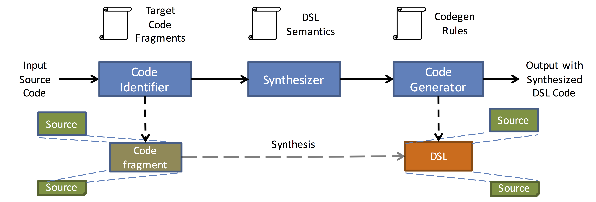
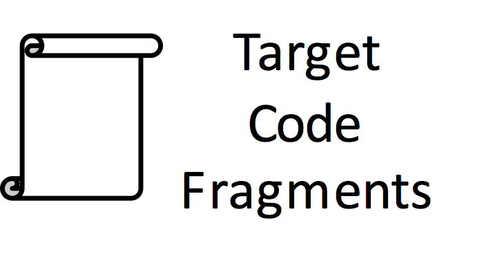
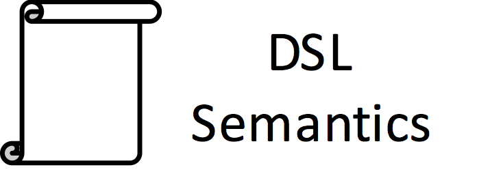
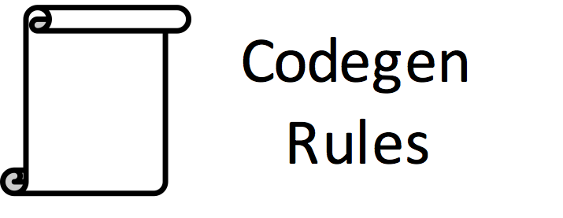
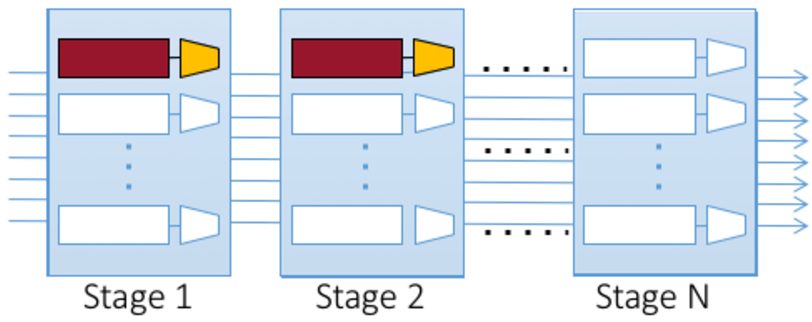

MetaLift
Leveraging DSLs made easy
MetaLift is a framework for building compilers for domain-specific languages (DSLs). If you are a developer and you want to use a new DSL for your application, you would need to rewrite your code manually, which is often tedious and error-prone. Rather than doing that, you can use MetaLift to generate a compiler that translates from your source language to your favorite DSL!
How does it work?
MetaLift is a compiler generator. Unlike traditional syntax-driven compilers, which consists of rules that recognize patterns in the input code and translate them into the target language, MetaLift uses verified lifting to search for possible candidate programs in the target language that the given input can be translated to. This frees you from the need to devise, check, and maintain those pesky syntax-driven rules!
To make the search efficient, rather than searching programs that are expressible in the concrete syntax of the target DSL, MetaLift searches over the space of programs expressed in a high-level specification language instead. The specification language has a functional language-like syntax (think Haskell) and represents the semantics of the target DSL. See below for details.
The MetaLift toolchain consists of three components, as shown below:
First, the input code is parsed into an abstract syntax tree (AST), with each node in the tree representing some part of the input program (e.g., a statement, an expression, etc). After that, MetaLift extracts code fragments from the input AST that are amenable for translation to the target DSL. Note that we are not aiming to do whole program transformations here. Given the target being a domain-specific language, it is likely that only parts of the input application is expressible using the DSL. You probably don't want to translate the entire application anyway: consider moving computation to the GPU for instance. You probably only want to move the most computationally intensive kernels to the GPU, and leave the rest of your application to remain on the CPU.
MetaLift currently has a parser for input programs written in Java, and we will expand to other general-purpose languages (C, Python) in the near future.
Each extracted code fragment is then passed to a program synthesizer (we currently use the Sketch synthesizer) which searches over the space of programs expressed in the specification language. If a candidate program can be proven to be semantically equivalent to the input (this is currently done using the Z3 theorem prover), it is then passed over to the code generator. Otherwise, we ask the synthesizer to find another candidate until we run out of programs or it times out.
Each successfully verified candidate program is then processed by the code generator, which translates the candidate program into the concrete syntax of the DSL. The resulting DSL program is then "stitched" back into the original code, with glue code generated to call the generated DSL program as needed. This is illustrated in the diagram above.
How do I use it?
We are still working on the details of the system, but conceptually MetaLift takes in three inputs to generate a compiler:
|  | What type of code fragment(s) should MetaLift attempt to translate? This depends on the target DSL of interest. For instance, we want to target loops over arrays if we want to move code to GPUs. | |||
|  | Define the semantics of the DSL that you like to translate to, using the MetaLift specification language. | |||
|  | For each of the DSL constructs defined earlier, tell MetaLift how to generate the concrete syntax of the DSL. | |||
What have been built using this?
Verified lifting has been the underlying technology used to build the following compilers:
| Dexter is a compiler that translates image processing kernels from C to Halide. | ||||
| Casper is a compiler that translates sequential Java to Spark and Hadoop. | ||||
| STNG is a compiler that enables Fortran kernels to leverage GPUs by compiling them into the Halide DSL. | ||||
|  | Domino is a compiler for compiling packet transactions to be executed on programmable switches via the P4 language. | |||
| QBS is a compiler for compiling Java code from applications constructed using object-relational mapping libraries (e.g., Django) into SQL queries. |
Recent News
- [June 20] We have released the source code of Dexter on its website.
- [Sept 19] Dexter, a verified lifting-based compiler that translates C to Halide, will be presented at SIGGRAPH Asia this year.
- [June 18] Casper was presented at SIGMOD this year. Be sure you check out the demo website.
- [April 18] Thank you Intel Labs for supporting our work!
- [Sept 17] Check out Alvin's talk at StrangeLoop 2017! [slides]
Please also check the links above for further publications.
People
MetaLift is jointly developed by the folks at the UC Berkeley Programming Systems Research Group, the University of Washington Programming Languages and Software Engineering Research Group, Adobe Research, and Intel Labs. The following are the main developers of MetaLift: